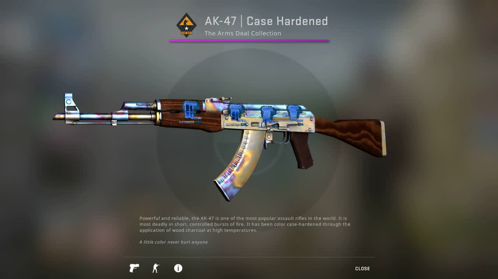

In the vibrant universe of Counter-Strike 2 (CS2), skins aren't just cosmetic upgrades; they're a thriving economy that allows players to express themselves and engage in trading. Whether you're a newcomer looking to buy your first CS2 skin or an experienced trader seeking to sell your collection, this comprehensive guide will unravel the intricacies of navigating the CS2 skin market. Discover strategies and techniques that will empower you to make informed decisions while exploring how third-party sites can facilitate your buying and selling endeavors.
Before diving into the buying and selling process, it's crucial to grasp the fundamentals of the CS2 skin market. Skins range in rarity and demand, with some being highly sought-after due to their visual appeal and popularity among players. This dynamic market is influenced by factors such as supply, demand, and the overall CS2 community trends.
When looking to enhance your CS2 inventory, follow these steps to ensure a fruitful buying experience:
Familiarize yourself with the skin's rarity, historical pricing, and community demand. Online marketplaces and CS2 forums are valuable resources for gauging current trends.
Opt for trustworthy platforms such as the Steam Community Market, dedicated skin marketplaces, and reputable CS2 trading communities. Beware of scams and always prioritize security. For a list of reputable CS2 skin markets, click here.
Compare prices across multiple platforms before finalizing a purchase. This strategy ensures you get the best value for your investment.
Consider buying skins during market fluctuations or sales events for potential savings. Patience and strategic timing can lead to advantageous deals.
For those looking to part ways with their skins, strategic selling is key:
Assess the value of your skins by researching current market prices and demand. Take note of wear levels, patterns, and rarity to accurately price your skins.
When listing your skins for sale, ensure high-quality images and accurate descriptions. Transparency builds trust with potential buyers.
Sell during peak demand periods or during events when prices tend to rise. Keeping an eye on community trends can help you capitalize on favorable conditions.
Be open to negotiation, but also know the minimum price you're willing to accept. Maintain a professional and respectful demeanor during negotiations.
In addition to official CS2 channels, third-party sites play a significant role in the skin trading ecosystem:
Platforms like Dmarket, Bitskins, and Skinport offer a range of CS2 skins for buying and selling. These sites often have a vast selection and may support various payment methods.
Engage with trading communities that operate independently of CS2, where users can list skins for sale or trade. These communities facilitate direct interactions between buyers and sellers.
Third-party sites generally prioritize secure transactions, including escrow services that protect both the buyer and seller during the trade.
The CS2 skin market is fluid, with trends and prices constantly changing. Stay informed by engaging with CS2 communities, following updates on skins, and tracking market fluctuations.
Buying and selling CS2 skins is a dynamic endeavor that requires careful research, strategic decision-making, and adaptability. By understanding the market, employing smart buying and selling tactics, and leveraging third-party platforms, you can navigate the CS2 skin market with confidence. Whether you're looking to enhance your collection or capitalize on your assets, this guide equips you with the knowledge to make informed choices and thrive in the world of CS2 skin trading.